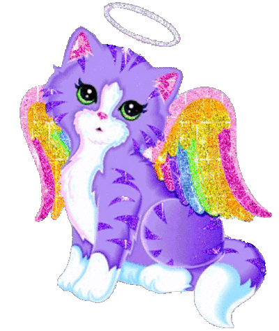
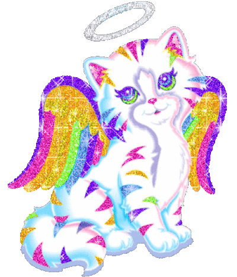

This website was made as a part of my time inthe Digital Scholarship Summer Fellows Program at Bryn Mawr College. DSSF is a "paid summer internship opportunity for Bryn Mawr undergraduate students to learn digital research and publication skills and gain professional experience by collaborating on public-facing digital scholarship projects. Fellows explore key issues and methods in digital scholarship, critical making, and multi-modal research through a combination of hands-on work, instruction, and discussion." The project for the summer of 2026 is Paul Thomas Annotated: In the Margins, the link to which can be found on my projects page! Read more about the program at the DSSF website!
